오늘의 과제

박사주판봇 그림 여덟 장이 다 안 웃긴다. 어디부터 볼까?
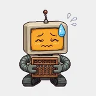
주판봇표정이요! 표정을 더 크게 고치면 다 웃길 겁니다!

초파리 연구원어긋남이 없는 그림은 표정을 키워도 안 웃겨. 큰 것부터 차례로 짚자.

하루점검표 다섯 항목을 준비했어요.
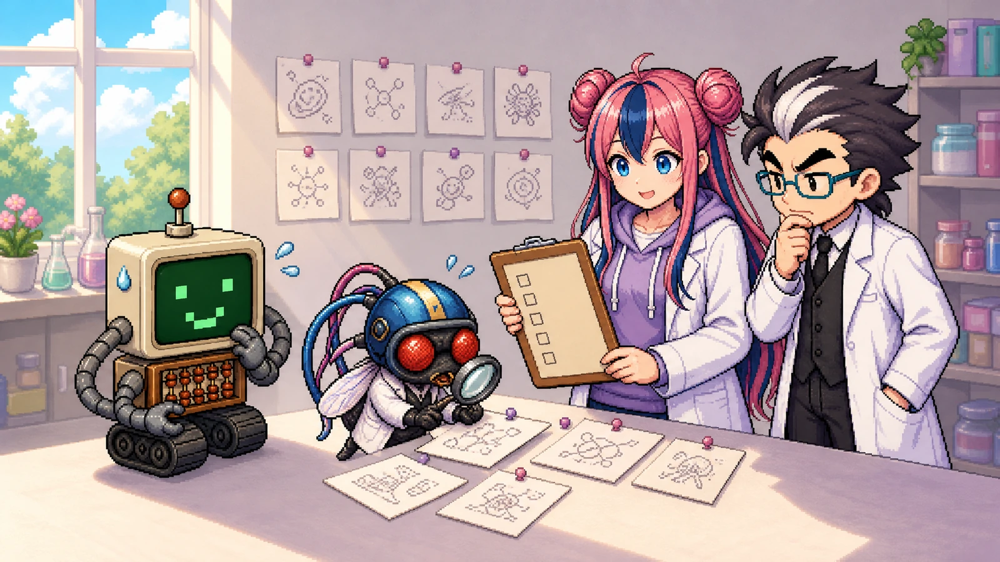
주판봇이 그린 안 웃긴 그림 여덟 장이 도착했습니다. 초파리는 "어디가 웃기지 않은지 찾으려면 위에서부터 짚어야 해"라고 합니다. 점검표 다섯 항목으로 원인을 찾아봅시다.
그림 실력·코드·수식을 몰라도 됩니다. 실험을 눌러 보며 따라오세요.

① 어긋남 → ② 형태 → ③ 움직임 → ④ 박자와 순서 → ⑤ 일관성
국이 싱거우면 파를 더 올리기 전에 간부터 봅니다. 큰 원인을 고치면 작은 문제가 함께 풀리기도 합니다.
개그 애니메이션 콘티 회의에서도 "웃음 포인트 → 그림 → 움직임 → 타이밍 → 연결" 순서로 수정 의견을 냅니다. 순서가 바뀌면 고친 곳을 다시 고치게 됩니다.


실패마다 처음 걸리는 항목이 다릅니다. 처음 걸린 곳부터 고칩니다.
① 어긋남에서 걸린 그림은 그림 실력을 아무리 올려도 웃기지 않습니다. 아이디어부터 다시 적습니다.
점검표 순서는 1~5부의 순서와 같습니다. 막히면 해당 부로 돌아갑니다.
AI가 그린 개그 그림이 어딘가 밋밋한데 이유를 모르겠습니다.
점검표 다섯 항목을 위에서부터 봅니다. 먼저 "기대 한 줄, 결과 한 줄"을 그림에서 읽어 낼 수 있는지 확인하면 대부분 ①에서 원인이 보입니다.
그림마다 증상을 보고 처음 걸리는 점검 항목을 고른 뒤, 연결된 원리와 고치는 프롬프트 조각을 확인합니다.
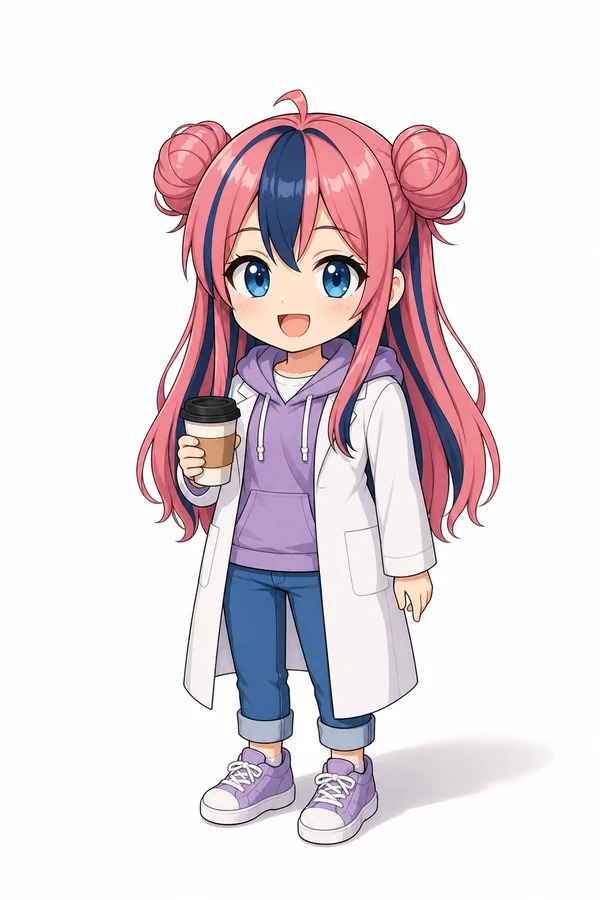
증상하루가 연구실에 서 있을 뿐인데 "사실 이건 커피를 쏟기 직전"이라는 설명이 붙어야 웃깁니다.
연결된 원리1부 1단계 어긋남
show both the expectation and the result in one image: Haru carefully carrying a full coffee cup, and the cup has landed upside down on top of her hair bun
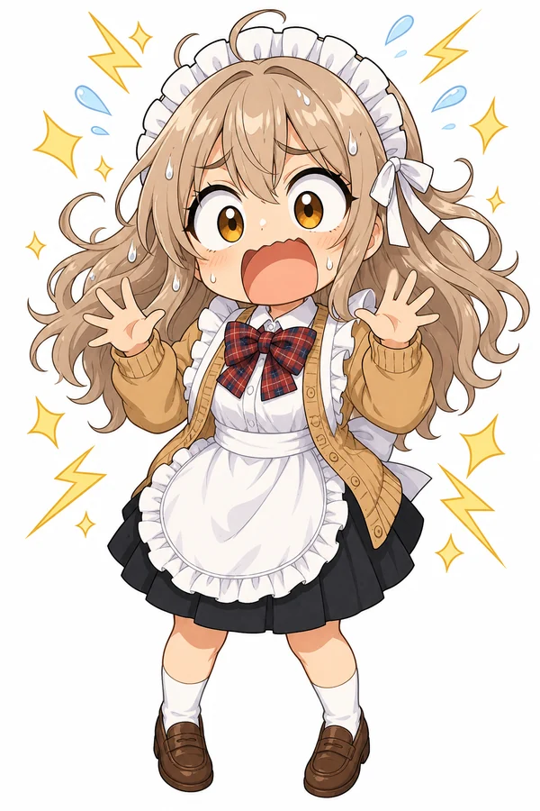
증상놀란 얼굴인데 눈·입·눈썹·땀·머리카락이 모두 커서 어디를 봐야 할지 모릅니다.
연결된 원리1부 3단계 한 곳 과장
only the eyes are exaggerated to about twice the normal size; mouth, eyebrows and hair stay normal
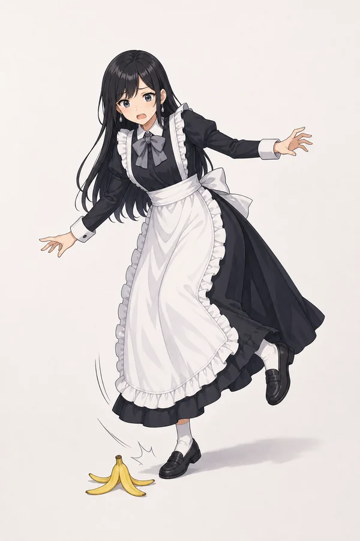
증상개그 장면인데 4.5등신이라 귀엽지도 멋지지도 않고 손발이 어색하게 깁니다.
연결된 원리1부 2단계 등신
그림에서는 요청한 어중간한 4.5등신이 재현되지 않고 6~7등신의 보통 비율로 나왔습니다. 그래도 "개그 장면인데 진지한 몸 비율"이라 표정과 몸이 어울리지 않는 점은 같은 ②에서 걸립니다. 어중간한 등신은 1부 2단계 실험에서 4.5로 맞춰 확인하세요.
super-deformed comedy proportions, about 2.5 heads tall, big head, short limbs
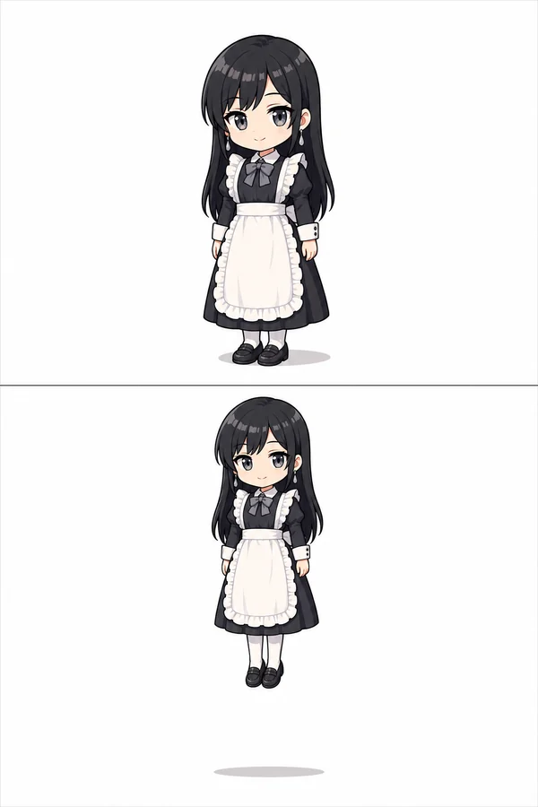
증상서 있던 시아가 다음 그림에서 갑자기 공중에 떠 있어 순간이동처럼 보입니다.
연결된 원리3부 1단계 예비동작
key poses in order: standing, crouching down deeply, jumping up high, landing with bent knees
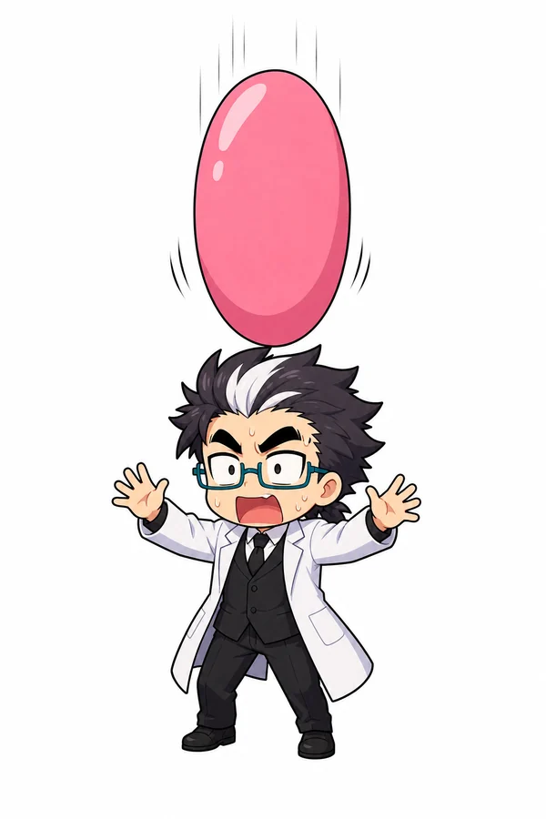
증상공이 떨어지며 길어질 때 폭이 그대로라, 공이 부풀었다 줄었다 하는 것처럼 보입니다.
연결된 원리3부 2단계 찌그러짐과 늘어남
the ball keeps the same volume: it gets thinner when it stretches and wider when it squashes
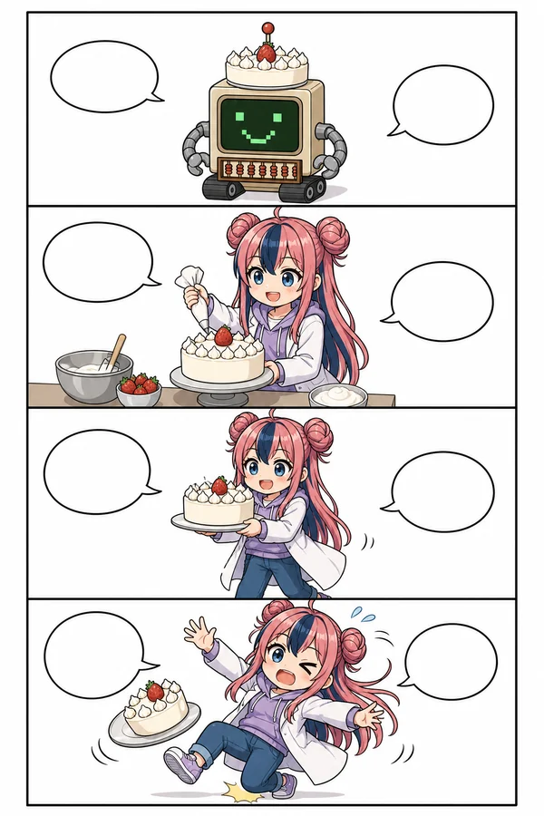
증상4컷 중 1컷에 이미 케이크가 주판봇 머리에 얹혀 있어, 나머지 컷은 설명이 됩니다.
연결된 원리4부 1단계 기승전결
Panel 1: Haru proudly finishes a cake. Panel 2: she carries it carefully. Panel 3: she trips. Panel 4: the cake lands perfectly on AbaBot's head
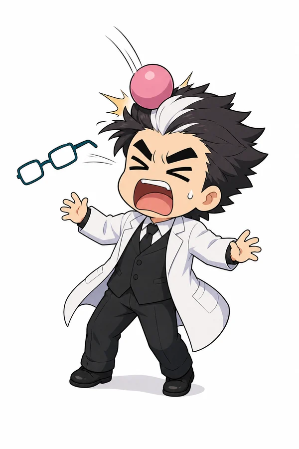
증상공이 박사 머리에 닿는 순간 안경이 이미 날아가고 있어, 무슨 일인지 이해하기 전에 끝납니다.
연결된 원리3부 4단계 정지
three separate moments: the ball hits his head; he freezes with a blank face; then his glasses pop off
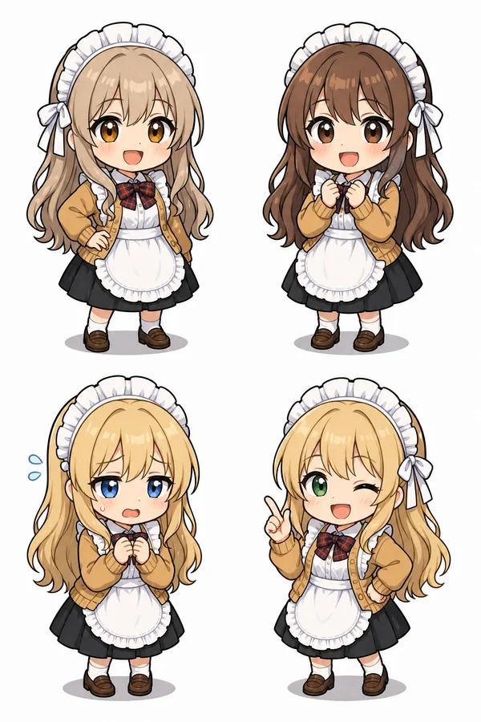
증상4컷 리액션 짤에서 모아의 머리색·리본 위치·눈 색이 컷마다 달라, 다른 사람처럼 보입니다.
연결된 원리5부 2단계 일관성
attach the reference sheet to every request and repeat the same character description; white ribbon over her LEFT ear in every panel
어긋남이 너무 세면 놀라움이 웃음을 덮는다는 것을 1부에서 봤습니다. 비슷하게, 웃음의 대상이 실제 사람의 아픈 곳이면 보는 사람 일부는 웃지 못하고 상처를 받습니다. 웃음은 "괜찮은 어긋남"일 때 납니다.
| 새는 방향 | 예 | 이렇게 바꾼다 |
|---|---|---|
| 외모·몸·나이로 놀림 | "○○는 못생겨서" 같은 외모 비하 | 캐릭터 자신의 실수나 상황의 엉뚱함으로 바꾼다(케이크가 머리에 얹힘) |
| 출신·성별·장애 등 집단 고정관념 | 특정 집단을 한 가지 모습으로 묶는 농담 | 집단이 아니라 이 캐릭터만의 버릇으로 바꾼다(주판봇의 성급함) |
| 실존 인물 얼굴·이름 사용 | 실제 사람을 우스꽝스럽게 그린 AI 그림 | 연구실 캐릭터나 새로 만든 가상 인물로 바꾼다 |
| 다치거나 슬픈 상황에 웃음 | 진짜로 다친 사람 앞의 데드팬 | 다치지 않는 과장(부드러운 고무공, 만화식 별)으로 바꾼다 |

이 부에서 배운 원리를 그림 생성 AI(Genspark 등)로 직접 확인합니다. A는 이 페이지 그림을 실제로 만든 프롬프트, B는 원리를 하나 빼거나 바꾼 비교용 문장입니다.
참고 그림 내려받기: haru_anime_base · sia_anime_base · moa_anime_base · haru_sheet · sia_sheet · moa_sheet · doctor_sheet · fruitfly_sprites_6 · jupanbot_ref_genspark_v0 · pixel_style_ref_prev_cover
설명해야 웃긴 그림(f1)을, 기대(조심조심)와 결과(머리 위 컵)가 함께 보이도록 고칩니다.
첨부: refs/haru_anime_base.png, refs/haru_sheet.png
Illustration, wide 16:9. Art style: cute super-deformed comedy anime style, about 2.5 heads tall, clean bold lineart, flat cel colors with one soft shadow tone. Match the attached reference images exactly (face, hair, colors, accessories), simplified into the SD style. All characters are adults in their twenties (the Professor is an adult man in his thirties) drawn in a comedy SD style: adult personalities and adult outfits, not children; modest outfits exactly as described. Haru (adult lab assistant, long straight pink hair with navy streaks and a thick navy streak down the center of the bangs, two round hair buns on top, small ahoge, big blue eyes), wearing lavender hoodie with white drawstrings over a white t-shirt, open white knee-length lab coat walks carefully, holding her hands as if carrying a cup, but the coffee cup has landed upside down right on top of one of her hair buns, coffee not spilling, and she has not noticed yet — calm proud face. The expectation (carrying carefully) and the result (cup on her head) are both visible in one image. Plain white background. No text, no letters, no numbers, no speech-bubble text, no logos, no watermark, no revealing clothing, not childlike, no school uniform, not resembling any famous anime character or real person.
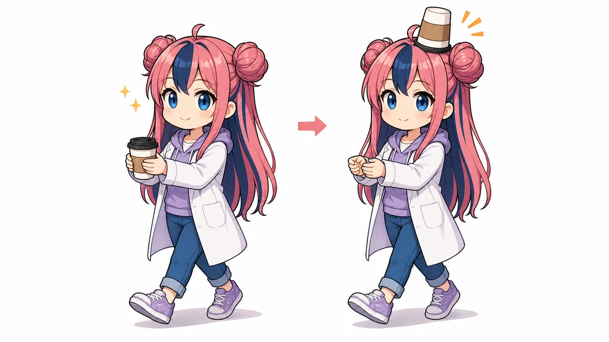
Same image, keep the same framing. Change only: remove the cup from her head; she simply stands holding the cup in her hands, smiling. Still no text.
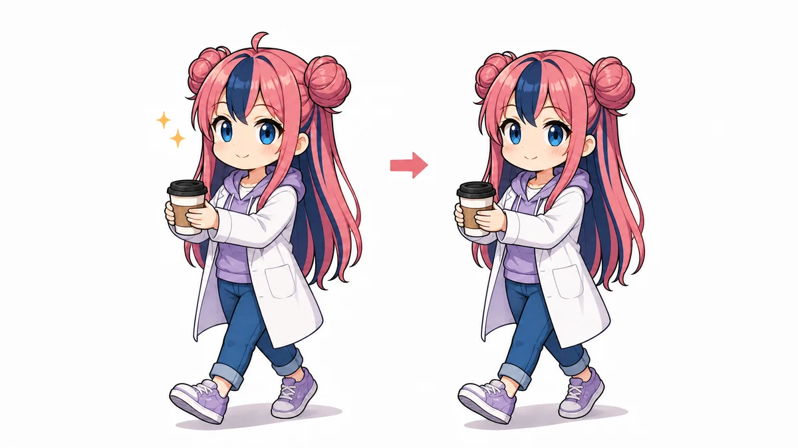
실제 결과: A는 한 장면이 아니라 화살표로 이은 두 장면으로 나왔지만, 오른쪽 장면 하나만으로도 "든 줄 아는 손"과 "머리 위 컵"이 함께 보여 어긋남이 읽힙니다. B는 컵이 손으로 돌아가 f1(설명해야 웃긴 그림)과 같아졌습니다.
공 맞음 → 굳음 → 안경 튐 세 장면으로 나눠 정지를 넣습니다.
첨부: refs/doctor_sheet.png
Illustration, wide 16:9, three panels side by side separated by white gutters. Art style: cute super-deformed comedy anime style, about 2.5 heads tall, clean bold lineart, flat cel colors with one soft shadow tone. Match the attached reference images exactly (face, hair, colors, accessories), simplified into the SD style. All characters are adults in their twenties (the Professor is an adult man in his thirties) drawn in a comedy SD style: adult personalities and adult outfits, not children; modest outfits exactly as described. Three separate moments of the Professor (adult male scientist in his thirties, dark charcoal spiky hair with a white streak at the front, very thick black eyebrows, teal rectangular glasses), wearing white lab coat over a black vest, white shirt and black tie: Panel 1: a pink rubber ball squashes on top of his head. Panel 2: he freezes completely with a blank face, the ball resting on his head, a tiny sweat drop. Panel 3: his teal glasses pop up off his face into the air, his face still blank. Plain white background. No text, no letters, no numbers, no speech-bubble text, no logos, no watermark, no revealing clothing, not childlike, no school uniform, not resembling any famous anime character or real person.
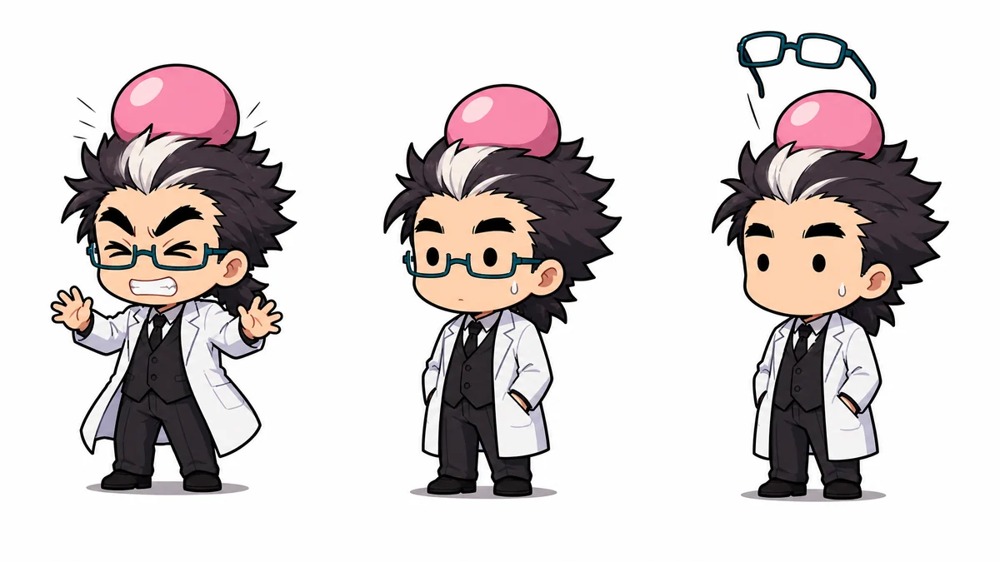
Same scene. Change only: merge the three moments into ONE single panel where the ball hits, he screams and the glasses fly away all at the same instant. Still no text.
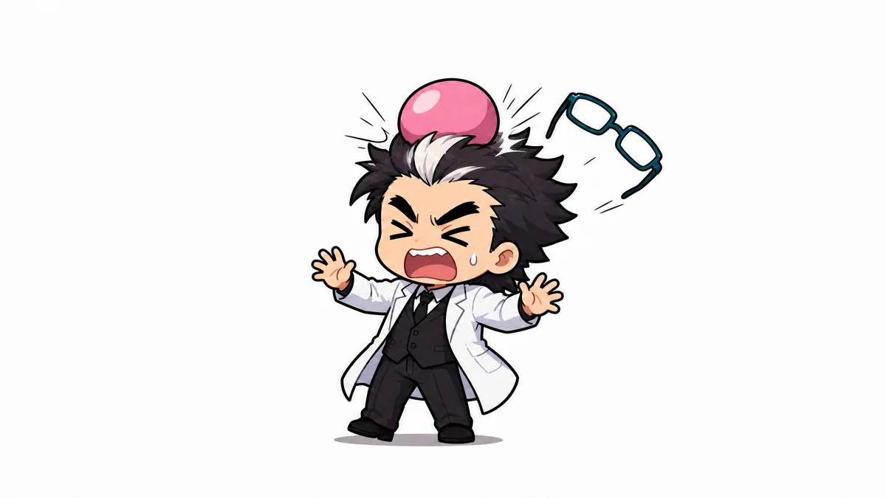
실제 결과: A는 맞음 → 굳음 → 안경 튐 세 장면이 요청대로 나왔고, 가운데 무표정 장면이 정지(홀드) 역할을 합니다. B는 세 일이 한 장면에 겹쳐 비명과 안경 중 어디를 먼저 봐야 할지 흩어집니다.
이 부의 원리를 내 손으로 프롬프트에 옮겨 보는 과제입니다. 목표 → 순서 → 넣을 프롬프트 → 확인할 것 → 예상 결과 → 자주 생기는 문제 순서로 적었습니다. 결과는 매번 조금씩 다르니, 그림이 똑같지 않아도 '확인할 것'이 맞으면 성공입니다.
목표컷마다 다른 얼굴(f8) 그림에서 한 컷의 리본 위치만 부분 수정으로 바로잡습니다.
왜 이 연습인가틀린 컷을 처음부터 다시 만들면 다른 곳이 또 틀릴 수 있습니다(일관성 확률이 곱으로 줄어듦). 틀린 곳만 칠해 고치면 나머지는 그대로 남습니다.
첨부할 참고 그림: refs/moa_anime_base.png, refs/moa_sheet.png — 참고 그림은 위 직접 만들어 보기에서 내려받을 수 있습니다.
Inpainting request (부분 수정): paint the mask only over Moa's hair area above BOTH ears, then use this text: White frilled maid headband with a single white ribbon over her LEFT ear (the left side of her own head, which appears on the right side of the picture when she faces the viewer). No ribbon over the right ear. Keep everything else unchanged. No text.
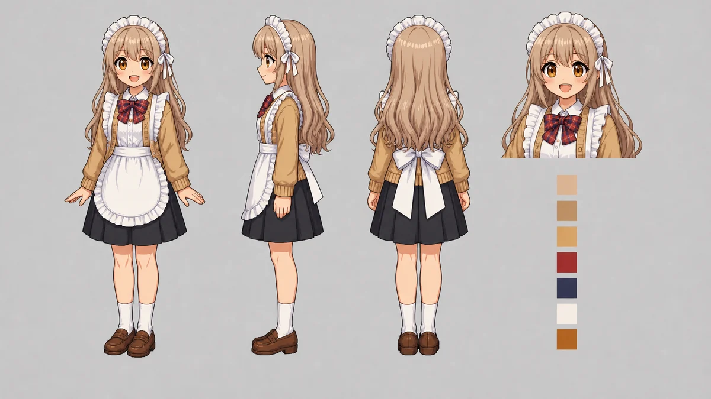
예상 결과칠한 머리 부분만 다시 그려져 리본이 모아의 왼쪽 귀 위(정면에서는 그림 오른쪽)에 하나 생기고, 얼굴과 옷은 그대로입니다.
| 문제 | 대처 |
|---|---|
| 리본이 두 개가 됐다 | "No ribbon over the right ear"를 강조 |
| 머리 모양이 크게 바뀌었다 | 칠하는 영역을 귀 위 작은 부분으로 줄임 |
실제 결과: 부분 수정이 아니라 새 설정 시트로 다시 그려졌습니다. 리본 위치(모아의 왼쪽 귀)는 맞았지만 원래 컷을 고친 것이 아니므로 연습 목표와는 다릅니다. 부분 수정 기능이 있는 도구에서 영역을 칠한 뒤 문장을 넣어야 원래 컷이 남습니다.
더 해 보기같은 방법으로 머리색이 틀린 컷도 머리카락만 칠해 "ash-beige wavy hair"로 고쳐 4컷을 맞춰 보세요.

| 항목 | 주판봇 | 초파리 |
|---|---|---|
| 정확도(처음 걸린 항목) | 3 | 9 |
| 원리(점검표 순서) | 2 | 9 |
| 고치는 조각 | 4 | 8 |
| 합계 | 9 | 26 |


점수는 이야기 속 예시입니다. 실제 그림을 평가한 값이 아닙니다.
| 주제 | 한 줄 | 작업에서는 |
|---|---|---|
| 진단 순서 | ① 어긋남 → ② 형태 → ③ 움직임 → ④ 박자·순서 → ⑤ 일관성 | 처음 걸린 곳부터 고친다 |
| 실패 8종 | 설명 필요·전부 과장·어중간한 등신·예비 없음·부푼 공·반전 누설·정지 없음·다른 얼굴 | 고치는 조각을 프롬프트에 붙인다 |
| 웃음의 방향 | 대상은 상황과 캐릭터 자신의 실수 | 외모·집단·실존 인물·진짜 아픔은 빼기 |

이 페이지에 나온 개념·방법·비유·쓰임을 모았습니다. 검색하고, "설명 보러 가기"로 본문에 돌아갑니다.
지식 색인을 출처와 함께 파일로 내려받습니다. 서지 관리는 BibTeX·RIS, 온톨로지 편집은 Turtle, 그래프 도구는 CSV, 여러 페이지 합치기는 kg.json입니다.